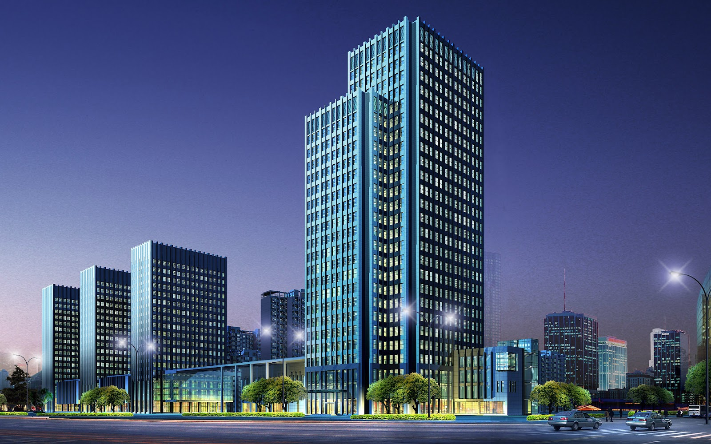
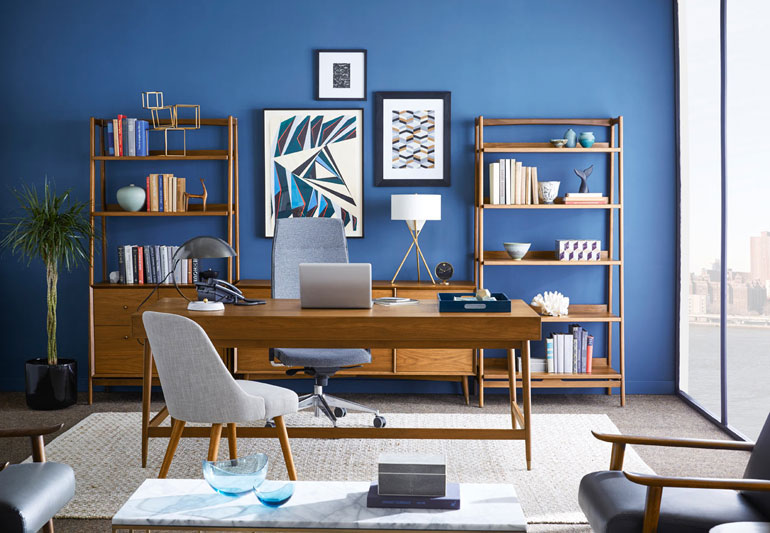
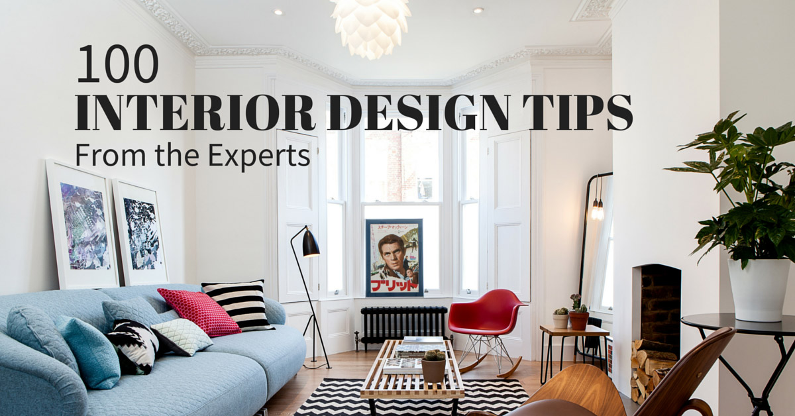

Building
We enjoy designing stuff,low floors,high floors,storages and everything thats inside our mindsInterior Design
We change furnitures,we select colors,we arrange all the stuff and makeup the houses of your dreams.Construction
Need something to stand up?You name it.We are gonna build it

Parker is a solid 3-column WordPress theme since it works as a creative showcase with nicely formatted columns and thumbnail boxes for showing off your images. It’s a full AJAX theme, meaning the pages load quickly. Not to mention the four different homepages which provide some variety for your website. Parker offers three showcase layouts, which can be used as portfolios or simple media galleries. The light and dark skins provide a nice starting point for customization and you can upload your own logo as well. Not only does the Parker theme have 13-page templates, but it works on all mobile devices thanks to the responsive design.
This is a completely translation-ready theme, making it a great choice for those creatives who want to expand into a more international audience.
The responsive layout looks great on all mobile devices and the shortcodes allow you to build items like buttons, toggles, tabs, and more.
The page templates are rather handy since they help you create pages for grid or masonry portfolios